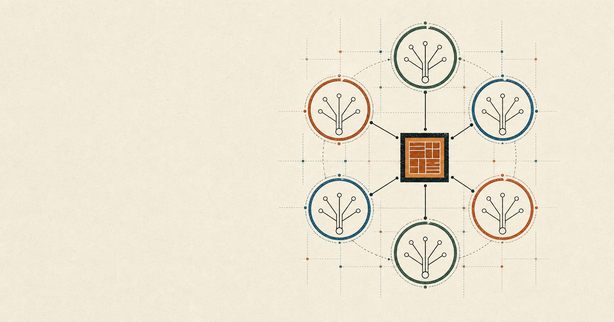

Approved short description
Thirty words
Witness Circles lets 2 to 16 Taproot output keys authorize one exact Bitcoin transaction, return their funds minus equal fees, and create an independently verifiable public lineage graph.
Media facts
Witness Circles is a finalized open protocol for exact multi-key Bitcoin transaction authorization and public lineage rendering.
Approved short description
Witness Circles lets 2 to 16 Taproot output keys authorize one exact Bitcoin transaction, return their funds minus equal fees, and create an independently verifiable public lineage graph.
Do not write
It is not proof of identity or attendance, a token, NFT, soulbound asset, market, investment, privacy system, custody service, or production mainnet launch.
Factsheet
Wallet consent, public-linkage tradeoffs, deterministic fees, independent indexers, state rollback, and why no token exists.
The normative specification, golden raw transaction, txid, package tests, transparency page, security model, and status gates.
The source mark and favicon are local SVG files. The application-bound Open Graph and press card is a local raster with no price imagery or unsupported claim.
Open press card Open vector alternativeApplication press artwork

{kind=link}
{kind=link}